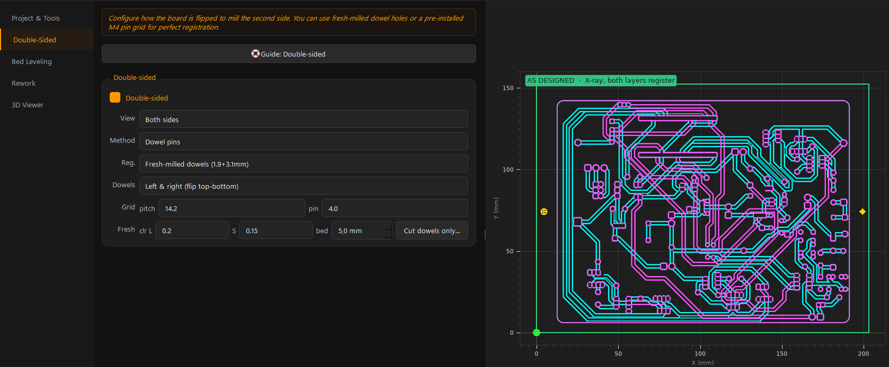

Double-sided boards
Top and bottom passes align off machine-located holes — never off the board edge. Two proven methods: dowel pins (zero measurement) and fiducial holes (free placement, probed after the flip).

Enable it
In 3 · Registration, tick Double-sided. This needs an F.Cu layer in the loaded Gerbers. The View selector (Both sides / Bottom / Top) picks which side the preview and exports show — in double-sided mode the per-side mirroring is applied automatically, so the single-sided Mirror checkbox is greyed out.
How the flip works
The board flips left-to-right about a vertical axis (or top-to-bottom if you configure it that way). The bottom is milled mirrored; reflecting the front copper about the same axis cancels the mirror, so the top is cut as plain F.Cu and still registers. The registration holes sit on the flip axis, which makes them invariant under the flip.
The preview shows both layers in the design frame so they register on screen. The exported job carries the real machine geometry (mirrored bottom, reflected-to-plain top). Both are correct — don't panic when a raw exported file looks flipped in a text viewer.
Method 1: Dowel pins (default, proven)
The machine drills dowel holes through the stock into the sacrificial bed. You seat pins in those holes and flip the board onto them. Nothing is measured — the bed itself holds the registration. Repeatably sub-0.1 mm.
Two registration variants
| Fresh-milled dowels (default) | Grid-seated pins | |
|---|---|---|
| Pins live in | fresh holes drilled through stock into the bed | the bed's threaded grid |
| Pins | Ø2 + Ø3 mm dowels | Ø4 mm grid pins |
| Flip keyed by | different diameters | asymmetric spacing (mark the bottom edge) |
| Depends on grid accuracy | no | yes (pitch + datum ~±0.2 mm) |
The dowels sit just outside the Edge.Cuts rectangle, in stock the cut-out discards — they cost zero design area.
Fresh-dowel settings
- Hole clearances (clr L / S): millimetres added to the big (3.1 mm) and small (1.9 mm) holes so the pins seat snugly. The defaults were dialed in on a fit-test coupon for this machine — only bump them if a pin binds during a test fit.
- bed: how far the dowel holes bite into the spoilboard under the stock.
- Dowels: Top & bottom (flip left-right) or Left & right (flip top-bottom) — pick whichever flip direction suits your clamping.
- Cut dowels only... exports just the dowel-hole G-code, no traces/drills/cutout — perfect for test-fitting the rods or deepening the bed bite. Keep the same XY origin so a re-cut lands on the existing holes.
Dowel operator sequence
- Read the run plan
Export writes
<name>_runplan.txtwith the exact order, bits, and pin sizes. Read it first — the steps below are the essentials. - Zero once Set XY zero once (fresh dowels: the stock corner; grid: the datum hole). Never re-zero XY between jobs. Re-zero Z after every bit change and after the flip.
- Run
_alignDrills the dowel holes through the stock into the bed. Seat the pins. - Bottom side
Run the bottom drill file(s), then
_bottom_traces. - Flip onto the pins Flip in the configured direction. The different pin diameters (or asymmetric spacing) make a wrong flip physically impossible to seat.
- Top side, then cut out
Re-zero Z on the new surface, run
_top_traces, and finish with_cutoutlast.
Method 2: Fiducial holes
The mill drills 2–4 stock-only corner holes. After milling the bottom you flip and re-place the board anywhere reasonable — no pins. You then measure where the fiducials actually landed, and the top traces are warped to the best-fit transform before export.
Settings
- n: number of fiducials (2–4 — use 4 when you can; more spread = better fit).
- Placement: On board (inset from the corners), In waste (outside the outline), or Manual (drag pins) to position them yourself on the preview.
- Flip left-right / Flip top-bottom: the flip direction you will physically perform.
- scale: also fit a uniform scale factor (absorbs thermal/measurement scale). Off = rigid rotation + translation only, like the dowel constraint.
After the flip: Fit & export top
Click Fit & export top... to open the Fiducial alignment dialog. Each row is one fiducial with its nominal position (where a perfect flip would put it) and a measured position you fill in. Three ways to fill a row:
| Way | How | Effort |
|---|---|---|
| Type it | Probe/jog by hand, read VPanel, type X/Y | Slowest, always works |
| Capture | Jog the bit into the hole (machine connected), press Capture — the live DRO position fills the row | Fast, needs careful jogging by eye |
| Auto | Jog roughly over the hole, press Auto — the machine finds the center electrically | ~1 minute per hole, no eyeballing |
Then press Compute fit: the dialog shows the RMS fit error, rotation, and scale. A good fit is well under 0.1 mm RMS. Press OK and the warped _top_traces file is exported.
The Auto fiducial finder
The Auto button locates a hole center to about 0.05 mm without any precision jogging:
- Prerequisites Firmware v2 on the Arduino (see Hardware & firmware), touch clips connected, spindle OFF, and copper present ~2.5 mm west of the hole (the finder touches there first to learn the surface height).
- Rough position Jog the tool roughly over the hole, 2–3 mm up. "Roughly" means within about a millimetre — click-to-jog on the preview is plenty accurate.
- Press Auto The machine performs shallow touch tests marching outward: contact = copper, no contact = hole. It bisects each hole edge and crosses X→Y→X to kill chord error, then fills the measured X/Y into the row (~25–35 touches).
A corner-fiducial fit cannot detect a wrong flip direction — corner patterns are symmetric enough that the math fits beautifully either way. Before running the top traces: with the board AS PLACED, click-to-jog to a distinctive board hole (not a fiducial) in the Top view and check the bit actually hovers over that hole. If it doesn't, the flip direction setting doesn't match what you physically did.
Output files (double-sided)
<name>_runplan.txt read first — order, bits, pin sizes, zeroing
<name>_align.nc dowel/fiducial holes
<name>_bottom_drill_<dia>mm.nc through-holes
<name>_bottom_traces.nc bottom isolation (mirrored)
<name>_top_traces.nc top isolation (plain F.Cu, reflected; fiducial mode: warped to fit)
<name>_cutout.nc run LASTAfter the flip, the board sits differently. On 2 · Bed leveling, set View to Top, rebuild the grid, Clear Z, re-probe, then Export top traces (leveled) re-writes the top file warped to the new surface and the fiducial fit. See Bed leveling & probing.